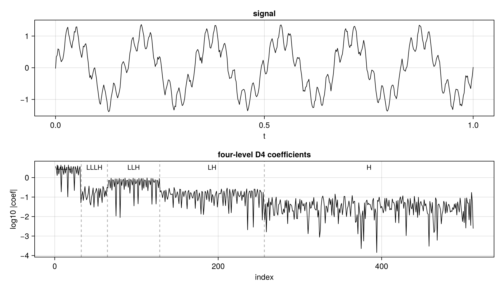
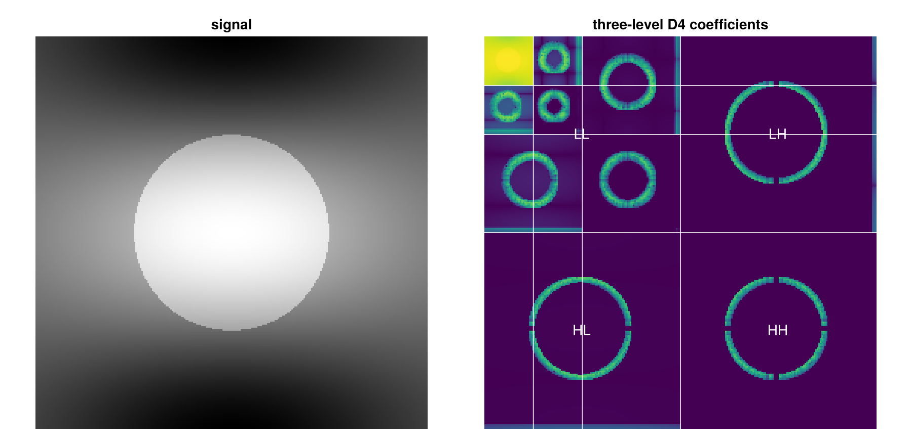
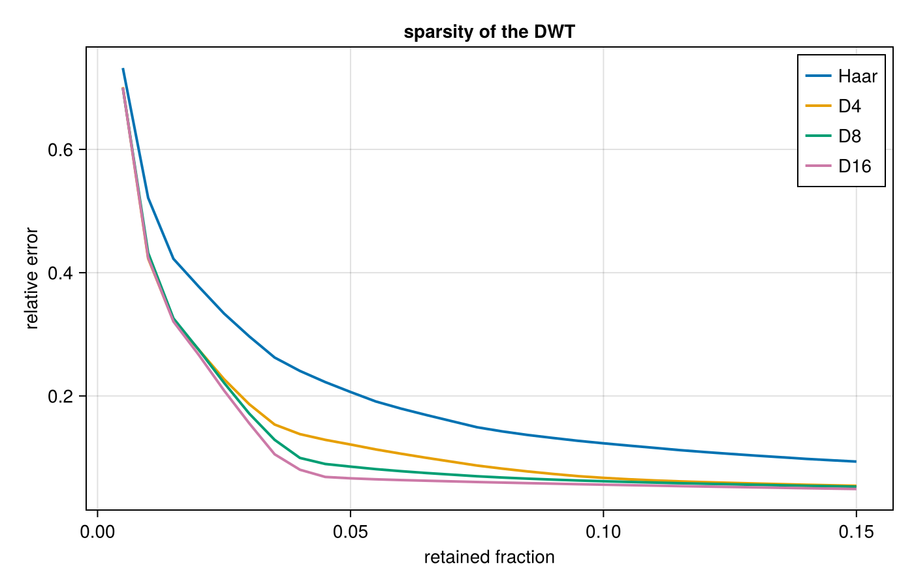
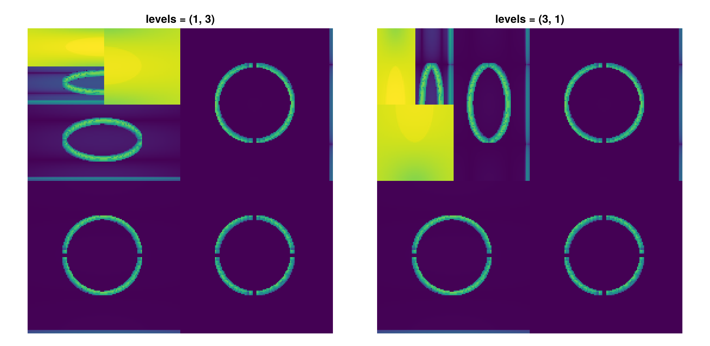
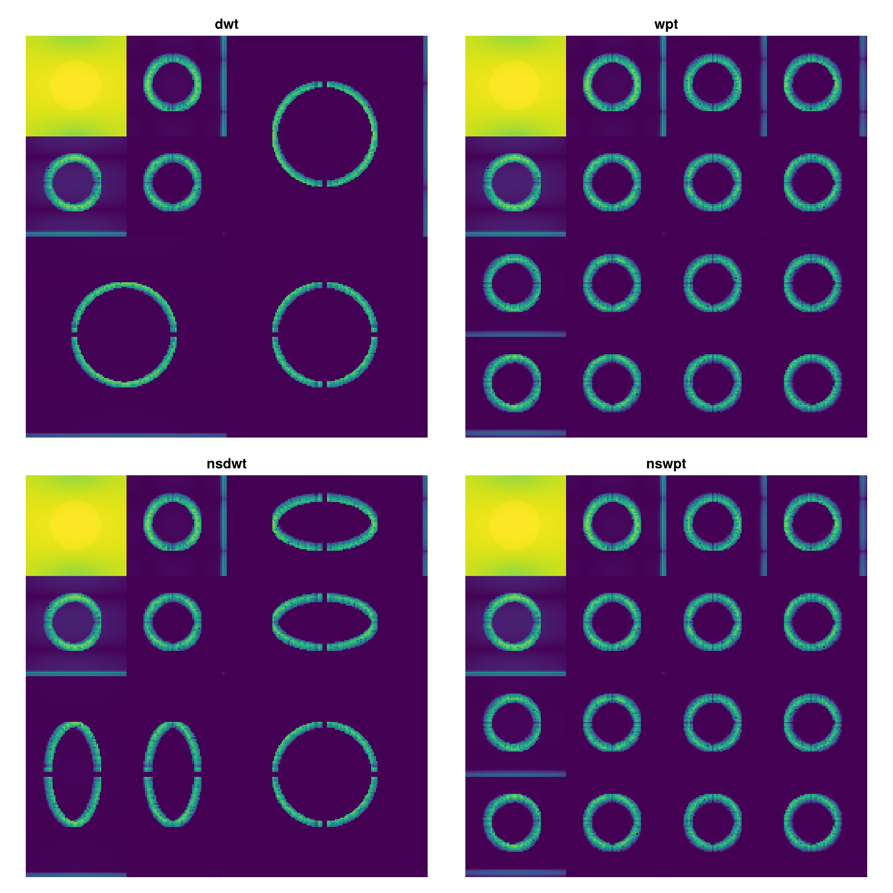

Examples
A 1D signal
A four-level D4 transform splits a signal into one approximation band and four detail bands.
using NDWaveletTransforms
using Random
Random.seed!(1)
t = range(0, 1, length = 2048)
s = sin.(2pi .* 6 .* t) .+ 0.35 .* sin.(2pi .* 45 .* t) .+ 0.05 .* randn(2048)
c = dwt(s, WT_D4, 4)Bands are named by their path from the root of the tree ("L" for lowpass, "H" for highpass). The strip below reads LLLL, LLLH, LLH, LH, H from coarsest to finest scales.

An image
img = rand(512, 512)
c = dwt(img, WT_D4, 3)
mags = sort(abs.(c); rev = true)
k = round(Int, 0.05 * length(c))
compressed = copy(c)
compressed[abs.(compressed) .< mags[k]] .= 0
img_compressed = idwt(compressed, WT_D4, 3)The coefficient array is an r-tree (a quadtree for a 2D transform, an octree for a 3D transform, etc.). In a conventional DWT, a multilevel transform recurses into the approximation band, shown in the top-left corner.

Sparsity
Smooth signals concentrate their energy in a few wavelet coefficients. Keeping the largest coefficients and zeroing the rest reconstructs the signal to a relative error that falls with the fraction kept. Filters with more vanishing moments do better on smooth signals, but have more taps, so are more sensitive to phase shfits.

Levels along each axis
The level argument can be a tuple, so a rectangular array can be transformed more deeply along one dimension than another.
img = rand(256, 256)
dwt(img, WT_D4, (1, 3)) # one level along axis 1, three along axis 2
dwt(img, WT_D4, (3, 1)) # the other way round
Transform flavours
Standard and nonstandard DWTs and WPTs are supported:
img = rand(128, 128)
dwt(img, WT_D4, 2) # standard
wpt(img, WT_D4, 2) # every subband recurses
nsdwt(img, WT_D4, 2) # nonstandard ordering
nswpt(img, WT_D4, 2) # both
The packet transform subdivides every subband, so the array is a full quad-tree rather than a corner of repeated approximation. The nonstandard ordering leaves a different arrangement in the detail bands.
A WPT inverts with iwpt and a nonstandard one with nsidwt, e.g.
x = rand(256)
c = wpt(x, WT_D4, 3)
iwpt!(c, WT_D4, 3)
c ≈ x